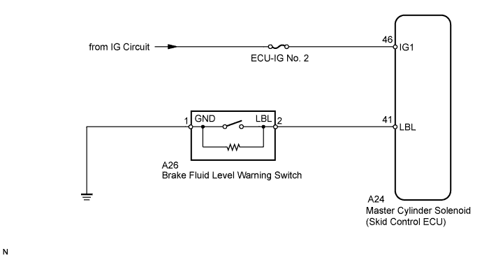
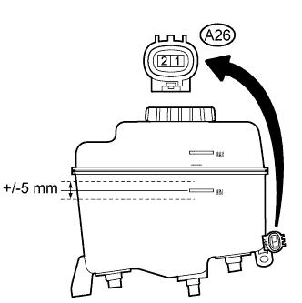
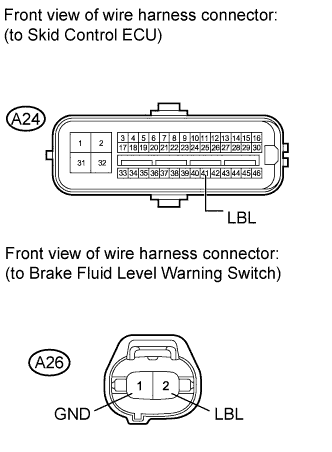

DTC C1202/58 Brake Fluid Level Low / Open Circuit in Brake Fluid Level Warning Switch Circuit |
| DTC Code | DTC Detection Condition | Trouble Area |
| C1202/58 | When either of the following conditions is detected:
|
|

| 1.CHECK BRAKE FLUID LEVEL |
Turn the engine switch off.
Depress the brake pedal 20 times or more (until the pedal reaction feels light and pedal stroke becomes longer).
Check the amount of fluid in the brake reservoir.
|
| ||||
| OK | |
| 2.INSPECT BRAKE FLUID LEVEL WARNING SWITCH |
 |
Disconnect the A26 brake fluid level warning switch connector.
Measure the resistance according to the value(s) in the table below.
| Tester Connection | Condition | Specified Condition |
| A26-1 - A26-2 | Float UP (Switch off) | 1.9 to 2.1 kΩ |
| A26-1 - A26-2 | Float DOWN (Switch on) | Below 1 Ω |
| Result | Proceed to | |
| OK | A | |
| NG | LHD | B |
| RHD | C | |
|
| ||||
|
| ||||
| A | |
| 3.CHECK HARNESS AND CONNECTOR (BRAKE FLUID LEVEL WARNING SWITCH - SKID CONTROL ECU) |
 |
Disconnect the A24 skid control ECU connector and A26 brake fluid level warning switch connector.
Measure the resistance according to the value(s) in the table below.
| Tester Connection | Condition | Specified Condition |
| A24-41 (LBL) - A26-2 (LBL) | Always | Below 1 Ω |
| A24-41 (LBL) - Body ground | Always | 10 kΩ or higher |
| A26-1 (GND) - Body ground | Always | Below 1 Ω |
|
| ||||
| OK | |
| 4.RECONFIRM DTC |
Clear the DTC (Click here).
Drive the vehicle at a speed of approximately 32 km/h (20 mph) or more for 60 seconds or more.
Check if the same DTC is output (Click here).
| Result | Proceed to | |
| DTC is not output | A | |
| DTC is output | LHD | B |
| RHD | C | |
|
| ||||
|
| ||||
| A | ||
| ||